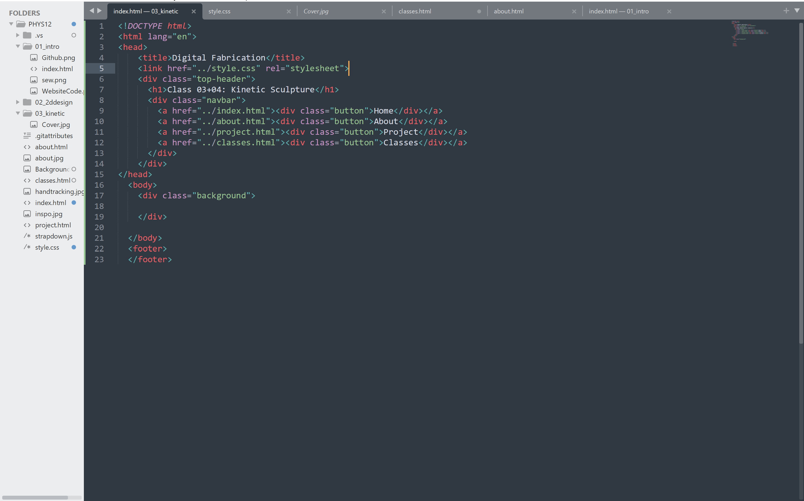

In order to document our engineering project, assignments, and progress, a clean and easy to use website was made for the first class of the course. The platform used for this was GitHub, using barebones HTML, CSS, and JavaScript programming. This website includes sections for each day of class and that class's assignments.
Using Sublime Text as a text editor, I created a simple yet sleek website design, with a navigation bar for all main pages and links on the home-page to each class's page. I now have a clean way to showcase my work and build my portfolio!